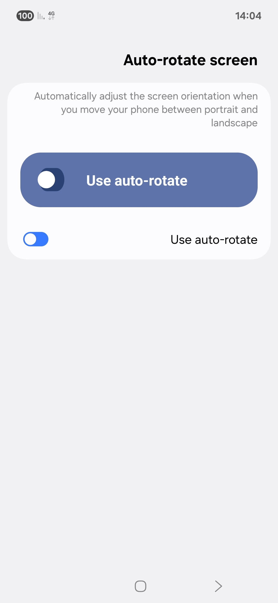
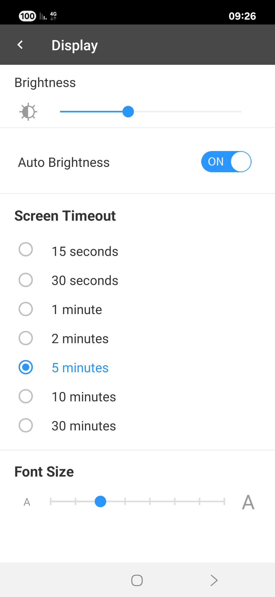
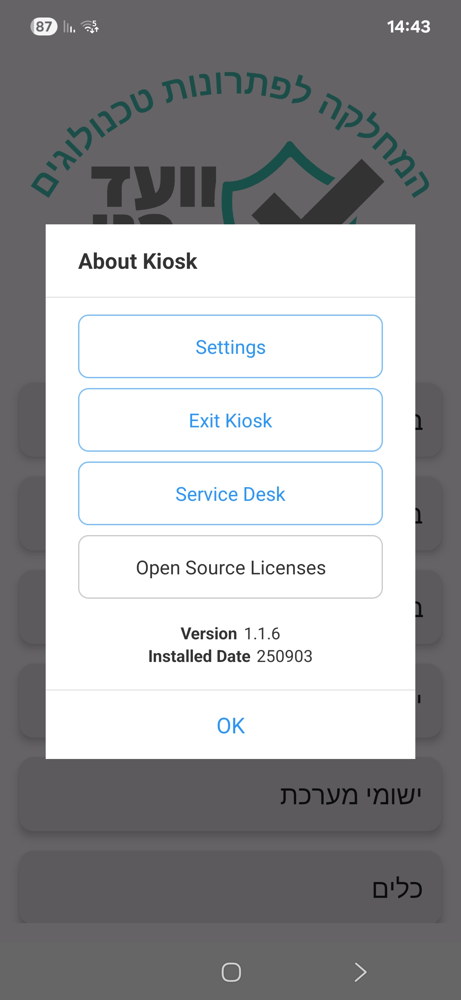
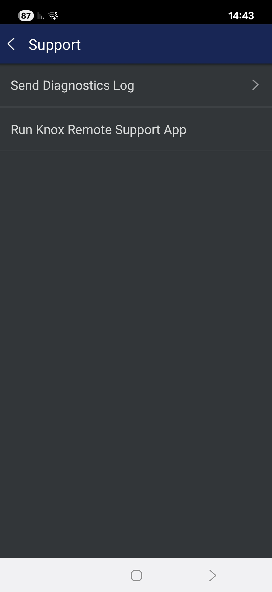
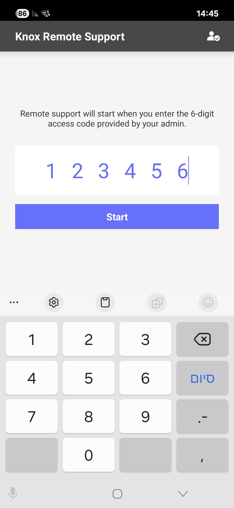

📱 מדריך הגדרות הטלפון החכם
מדריך מלא ומפורט לכל ההגדרות החשובות

לחצו על "הבא" כדי להתחיל
2/21
📶
Wi-Fi - רשת אלחוטית
Wi-Fi מאפשר לכם להתחבר לאינטרנט דרך רשת אלחוטית במקום להשתמש בנתונים הסלולריים שלכם. זה חוסך בסוללה
ובכסף!
איך להשתמש:
- לחצו על "Wi-Fi" בהגדרות
- וודאו שהמתג פועל (בצבע כחול/ירוק)
- בחרו רשת מהרשימה
- הזינו סיסמה אם נדרש
- לחצו "התחבר"
📷 צילום מסך של הגדרות Wi-Fi
💡 טיפ: התחברו לרשתות Wi-Fi מהימנות בלבד. רשתות ציבוריות עלולות להיות לא בטוחות.
3/21
🔗
Bluetooth - חיבור אלחוטי
Bluetooth מאפשר להתחבר להתקנים אלחוטיים כמו אוזניות, רמקולים, מקלדות ועכברים במרחק קצר.
איך להתחבר:
- לחצו על "Bluetooth" בהגדרות
- הפעילו את הבלוטות' (מתג כחול/ירוק)
- וודאו שההתקן השני במצב זיהוי
- בחרו את ההתקן מהרשימה
- אשרו את ההתחברות
📷 צילום מסך של הגדרות Bluetooth
💡 טיפ: כבו בלוטות' כשלא משתמשים כדי לחסוך סוללה ולשמור על ביטחון.
4/21
📡
NFC - תקשורת קרובה
NFC (Near Field Communication) מאפשר תקשורת במרחק קצר מאוד. משמש לתשלומים, העברת קבצים ואפליקציות.
איך להשתמש:
- לחצו על "NFC" בהגדרות
- הפעילו את ההגדרה
- קרבו את הטלפון להתקן NFC אחר
- פעלו לפי ההוראות על המסך
📷 צילום מסך של הגדרות NFC
⚠️ אזהרה: השתמשו ב-NFC רק עם התקנים מהימנים. כבו כשלא בשימוש לביטחון.
5/21
📱
Mobile Data - נתונים סלולריים
נתונים סלולריים מאפשרים לכם לגלוש באינטרנט כשאין Wi-Fi זמין. זה משתמש בחבילת הנתונים שלכם מהסלולר.
איך לנהל:
- לחצו על "Mobile Data" או "נתונים סלולריים"
- הפעילו או כבו את הנתונים
- צפו בשימוש החודשי
- הגדירו הגבלות אם נדרש
- בחרו אפליקציות שרשאיות להשתמש
📷 צילום מסך של הגדרות Mobile Data
💡 טיפ: עקבו אחר השימוש כדי לא לחרוג מהחבילה. השתמשו ב-Wi-Fi כלמא שאפשר.
6/21
📍
Location - שירותי מיקום
שירותי מיקום מאפשרים לאפליקציות לדעת היכן אתם נמצאים. שימושי לניווט, מזג אויר ואפליקציות מקומיות.
איך לנהל:
- לחצו על "Location" או "מיקום"
- הפעילו או כבו את שירותי המיקום
- בחרו רמת דיוק (גבוהה/חיסכון סוללה)
- נהלו הרשאות לכל אפליקציה
- צפו בהיסטוריית המיקומים
📷 צילום מסך של הגדרות Location
⚠️ פרטיות: תנו הרשאת מיקום רק לאפליקציות הדרושות. בדקו מדי פעם את ההגדרות.
7/21
🔦
Flash Light - פנס
הפנס משתמש בפלש של המצלמה כדי לספק תאורה. מאוד שימושי במקומות חשוכים או לשימושים חירום.
איך להפעיל:
- משכו מלמעלה את לוח הקיצורים
- לחצו על סמל הפנס 🔦
- או השתמשו בהגדרות
- כבו את הפנס כשסיימתם
📷 צילום מסך של הגדרות Flash Light
💡 טיפ: הפנס מרוקן את הסוללה מהר. זכרו לכבות אותו כשלא משתמשים.
8/21
🔄
Auto Rotate - סיבוב אוטומטי
סיבוב אוטומטי משנה את כיוון המסך לפי איך שאתם מחזיקים את הטלפון - לרוחב או לאורך.
איך לנהל:
- לחצו על "Auto Rotate" או "סיבוב אוטומטי"
- הפעילו או כבו את התכונה
- או השתמשו בקיצור דרך מלוח הקיצורים
- בדקו שהמסך מגיב לסיבוב הטלפון
📷 צילום מסך של הגדרות Auto Rotate

💡 טיפ: כבו את הסיבוב כשאתם שוכבים במיטה כדי למנוע סיבובים לא רצויים.
9/21
🔕
Do Not Disturb - נא לא להפריע
מצב "נא לא להפריע" משתיק הודעות, שיחות והתראות כדי שלא תופרעו. אידיאלי לישיבות, שינה או זמן איכות.
איך להגדיר:
- לחצו על "Do Not Disturb"
- הפעילו את המצב
- הגדירו חריגים (אנשי קשר חשובים)
- קבעו זמנים אוטומטיים
- בחרו מה לחסום ומה לאפשר
📷 צילום מסך של הגדרות Do Not Disturb
💡 טיפ: הגדירו שיחות חוזרות יעברו דרך, וחריגים לאנשי קשר חשובים לחירום.
10/21
💻
Display - הגדרות תצוגה
הגדרות התצוגה מאפשרות להתאים את בהירות המסך, גודל הטקסט, רזולוציה ועוד כדי לשפר את חווית השימוש.
הגדרות חשובות:
- בהירות - התאימו לסביבה
- גודל טקסט - להקלת קריאה
- זמן כיבוי מסך
- רזולוציה ואיכות
- מסך תמיד דולק (Always On Display)
📷 צילום מסך של הגדרות Display

💡 טיפ: השתמשו בבהירות אוטומטית וקצרו את זמן כיבוי המסך לחיסכון בסוללה.
11/21
🌙
Blue Light - פילטר אור כחול
פילטר האור הכחול מפחית את האור הכחול מהמסך, מה שעוזר לעיניים ומשפר את איכות השינה בערב.
📷 צילום מסך של הגדרות Blue Light

💡 טיפ: הפעילו אוטומטית בשעות הערב כדי לשפר את איכות השינה שלכם.
12/21
🔐
Screen Lock - נעילת מסך
נעילת מסך מגינה על המידע שלכם מגישה לא מורשית. תוכלו להגדיר סיסמה, דפוס, פין או זיהוי ביומטרי.
סוגי נעילה:
- אף דבר - ללא הגנה (לא מומלץ)
- החלקה - הגנה בסיסית
- דפוס - ציור דפוס על המסך
- פין - 4-8 ספרות
- סיסמה - אותיות, מספרים וסמלים
- טביעת אצבע - זיהוי ביומטרי
- זיהוי פנים - סריקת פנים
📷 צילום מסך של הגדרות Screen Lock
⚠️ חשוב: בחרו שיטת נעילה חזקה ואל תשכחו את הקוד! גבו את המידע באופן קבוע.
13/21
🔊
Sound - צליל
הגדרות הצליל מאפשרות לכם לשלוט בעוצמת הרמקולים, רטט, צלילי התראות וטון צלצול.
הגדרות צליל:
- עוצמת מדיה - מוזיקה וסרטונים
- עוצמת התראות - שיחות והודעות
- עוצמת השכמה - השכמות ותזמונים
- טון צלצול - קול שיחות נכנסות
- צלילי התראות - הודעות ואפליקציות
- רטט - הגדרות רטט למצבים שונים
📷 צילום מסך של הגדרות Sound
💡 טיפ: השתמשו בפרופילי צליל שונים לבית, עבודה וציבור. כוונו נפרד כל סוג עוצמה.
14/21
⚙️
Device Maintenance - תחזוקת מכשיר
תחזוקת המכשיר עוזרת לשמור על ביצועים אופטימליים של הטלפון דרך ניקוי, אופטימיזציה וניהול משאבים.
כלי תחזוקה:
- ניקוי זיכרון - מחיקת קבצים זמניים
- אופטימיזציה - שיפור ביצועים
- ניהול סוללה - בדיקת צריכת חשמל
- ניקוי אחסון - פינוי מקום פנוי
- סריקת אבטחה - חיפוש איומים
📷 צילום מסך של הגדרות Device Maintenance
💡 טיפ: הריצו תחזוקה שבועית לביצועים טובים. בדקו איזה אפליקציות צורכות הכי הרבה סוללה.
15/21
📶
Mobile Network - רשת סלולרית
הגדרות הרשת הסלולרית מאפשרות ניהול חיבור לרשת הסלולר, בחירת ספק ורשת, והגדרות נדידה.
הגדרות רשת:
- בחירת רשת - אוטומטי או ידני
- מצב רשת - 2G/3G/4G/5G
- נדידה - שימוש ברשתות זרות
- Access Point Names - הגדרות APN
- VoLTE - שיחות איכות גבוהה
📷 צילום מסך של הגדרות Mobile Network
⚠️ זהירות: נדידה בחו"ל עלולה לעלות יקר. בדקו תעריפים לפני נסיעה.
16/21
🌐
Language - שפה
הגדרות השפה מאפשרות לכם לשנות את שפת המערכת, שפת המקלדת ואזורי זמן על פי המיקום הגיאוגרפי שלכם.
הגדרות שפה:
- שפת מערכת - הגדרת השפה הראשית
- שפות נוספות - הוספת שפות משניות
- מקלדת - בחירת שפות קלט
- אזור וזמן - הגדרת אזור זמן
- פורמטים - תאריכים, מספרים ומטבע
- כיוון טקסט - שמאל לימין או ימין לשמאל
📷 צילום מסך של הגדרות Language
💡 טיפ: הוספת שפות נוספות תאפשר לכם לעבור ביניהן במהירות. שימו לב שחלק מהאפליקציות דורשות הפעלה מחדש.
17/21
♿
Accessibility - נגישות
הגדרות נגישות מאפשרות התאמה אישית למשתמשים עם צרכים מיוחדים - ראייה, שמיעה, מגע וקוגניציה.
תכונות נגישות:
- TalkBack - קריינות מסך לעיוורים
- גודל טקסט וגופנים - הגדלת טקסט
- ניגודיות גבוהה - שיפור נראות
- זום ותגדל - הגדלת מסך
- סיוע מגע - עזרות למגע
- כתוביות - לכבדי שמיעה
- ויברציה וקול - התראות חלופיות
📷 צילום מסך של הגדרות Accessibility
💡 טיפ: הגדרות נגישות מועילות לכולם! הגדלת טקסט עוזרת גם למי שלא צריך משקפיים, והקריינות שימושית בזמן נהיגה.
18/21
🔧
Remote Support - תמיכה מרחוק
תמיכה מרחוק מאפשרת לטכנאי או מנהל IT להתחבר לטלפון שלכם מרחוק כדי לפתור בעיות, להתקין אפליקציות או לעדכן הגדרות בלי שתצטרכו להגיע פיזית.
⚙️ תיקון הגדרות
שינוי הגדרות מורכבות בלי טעויות
📱 התקנת אפליקציות
התקנה אוטומטית של אפליקציות נדרשות
🎓 הדרכה
למידה תוך כדי צפייה בפעולות
💡 יתרון מרכזי: חיסכון בזמן ובמאמץ - לא צריך להגיע למשרד או לחכות לטכנאי!
19/21
🔒
Knox Remote Support - סמסונג
Knox Remote Support הוא הפתרון הרשמי של Samsung לתמיכה מרחוק. מותקן מראש ברוב טלפוני Galaxy ומספק חיבור בטוח ומוצפן.
איך להפעיל תמיכה מרחוק:
- לחצו על **Service Desk**
- בחרו **Run Knox Remote App**
- הקלידו את הקוד שקיבלתם
📷 צילום מסך של Knox Remote Support
1. מסך התחברות
2. הזנת קוד
3. אישור הרשאות

⚠️ חשוב לזכור: הקוד תקף לזמן מוגבל ויש להזינו במדויק.
20/21
🛡️
בטיחות ואבטחה
תמיכה מרחוק היא כלי עוצמתי ולכן חשוב מאוד לשמור על כללי בטיחות ואבטחה נוקשים כדי להגן על המידע האישי שלכם.
כללי בטיחות חובה:
- רק טכנאים מורשים: וודאו שאתם מכירים את הטכנאי
- אל תשתפו קוד: הקוד רק לטכנאי שביקש אותו
- עצרו בכל רגע: תמיד תוכלו לנתק את החיבור
- צפו במה שקורה: עקבו אחר הפעולות במסך
- שאלו שאלות: אל תהססו לשאול מה הטכנאי עושה
🚨 אל תעשו את זה לעולם:
• אל תתנו קוד לאנשים לא מוכרים
• אל תשאירו את החיבור ללא השגחה
• אל תתירו גישה לאפליקציות בנקאיות
• אל תיתנו קודים בשיחות טלפון לא מזוהות
• אל תתנו קוד לאנשים לא מוכרים
• אל תשאירו את החיבור ללא השגחה
• אל תתירו גישה לאפליקציות בנקאיות
• אל תיתנו קודים בשיחות טלפון לא מזוהות
💡 זכרו: אתם בשליטה! תמיד תוכלו לעצור את הסשן או לסגור את האפליקציה.
21/21
🎯 סיכום ועצות
עצות חשובות לשימוש מיטבי:
🔋 חיסכון בסוללה:
• כבו Wi-Fi/Bluetooth כשלא בשימוש
• הגדירו בהירות אוטומטית
• קצרו זמן כיבוי מסך
• כבו Wi-Fi/Bluetooth כשלא בשימוש
• הגדירו בהירות אוטומטית
• קצרו זמן כיבוי מסך
🛡️ ביטחון ופרטיות:
• בדקו הרשאות אפליקציות
• השתמשו ברשתות מהימנות
• נהלו הגדרות מיקום בזהירות
• בדקו הרשאות אפליקציות
• השתמשו ברשתות מהימנות
• נהלו הגדרות מיקום בזהירות
✨ זכרו: כל הגדרה שינתה יכולה להשפיע על ביצועים, סוללה וביטחון.
התנסו בהגדרות השונות כדי למצוא את המתאים ביותר עבורכם!
המדריך הסתיים - תהנו מהטלפון החכם שלכם! 📱✨